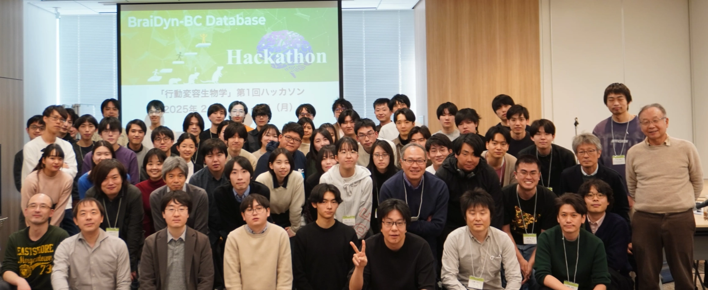
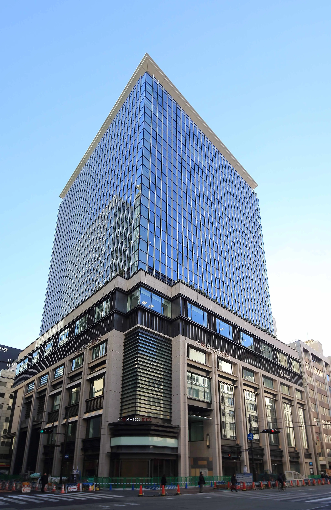

学術変革領域A・行動変容生物学 ハッカソン 2027
マウスの大規模神経活動・行動データベース「BraiDyn-BC」を活用し、行動と神経活動の関連性を探る解析手法やツールの開発に取り組む3日間のイベントです。初学者歓迎・チューターがサポートします。
〜 22日(月)
ライフサイエンスハブ
学部生（定員40名）

開催趣旨
本ハッカソンは、文部科学省 学術変革領域研究(A)「行動変容生物学」の取り組みとして、研究者を目指す若手（大学院生・学部生・ポスドク等）を対象に開催します。
3日間のイベントでは、マウスの行動実験データと対応する神経活動データを包括した「BraiDyn-BCデータベース」を用い、行動変容のメカニズムに関する新たな解析手法やツールの利用・開発に取り組みます。
チーム（5名程度）ごとに専門のチューターがつきますので、神経科学の初学者も歓迎します。最終日にはチームで作業した内容の発表と質疑応答を行い、主に学術的な視点からフィードバックを行います。
初学者歓迎・チューター配置
Google Colabのチュートリアルコードを提供。各チームにチューターがつき、テーマ設定から解析実装までサポートします。
チーム編成のサポート
事前にチームを組んでおく必要はありません。事前アンケートの興味関心をもとに、運営側でチーム（5名程度）を提案します。
研究者との交流
解析作業だけでなく、田和辻可昌氏（全脳アーキテクチャ・イニシアティブ）によるランチセミナー＆ハンズオンや、現場研究者との交流機会を設けています。
データベース・リソース
BraiDyn-BC Database
マウスの学習行動と全脳神経活動を包括した大規模マルチモーダルデータセットです。仕様やデータ構造の詳細をご確認いただけます。
BraiDyn-BC GitHub
行動変容生物学ハッカソンおよび関連解析パイプライン、各種オープンソースツール群が公開されている公式GitHubオーガニゼーションです。
チュートリアル資料
事前学習用チュートリアルコード、Google Colaboratoryノートブック、解説スライド、サンプルデータなどの配布資料一式を格納しています。
データ論文
本ハッカソンで活用する広域Ca2+イメージングと行動変容データを詳細に解説した、Nature Scientific Data誌掲載の公式データ論文です。
タイムテーブル
参加案内
対象者
神経活動や行動データ解析に興味のある若手（大学院生・学部生を含む）やポスドク。定員40名程度。初学者も歓迎します。
環境・持参物
WiFiでGoogle Colaboratoryが動くノートPCをご持参ください。使用言語はPythonです。
参加費・実費
・参加費：4,000円（初日懇親会のケータリング＋ソフトドリンク代込み / 学部生・一般一律）
・昼食代：無料（2日目・3日目のお弁当とお茶は事務局より提供）
※アルコール類は別途実費負担となります（旅費・宿泊費等は各自負担）
会場アクセス
日本橋ライフサイエンスハブ
〒103-0022 東京都中央区日本橋室町1-5-5 室町ちばぎんビル8階

会場：室町ちばぎんビル 8階主催・運営体制
お問い合わせ先
ハッカソンに関するご連絡・ご質問は下記までお願いいたします。